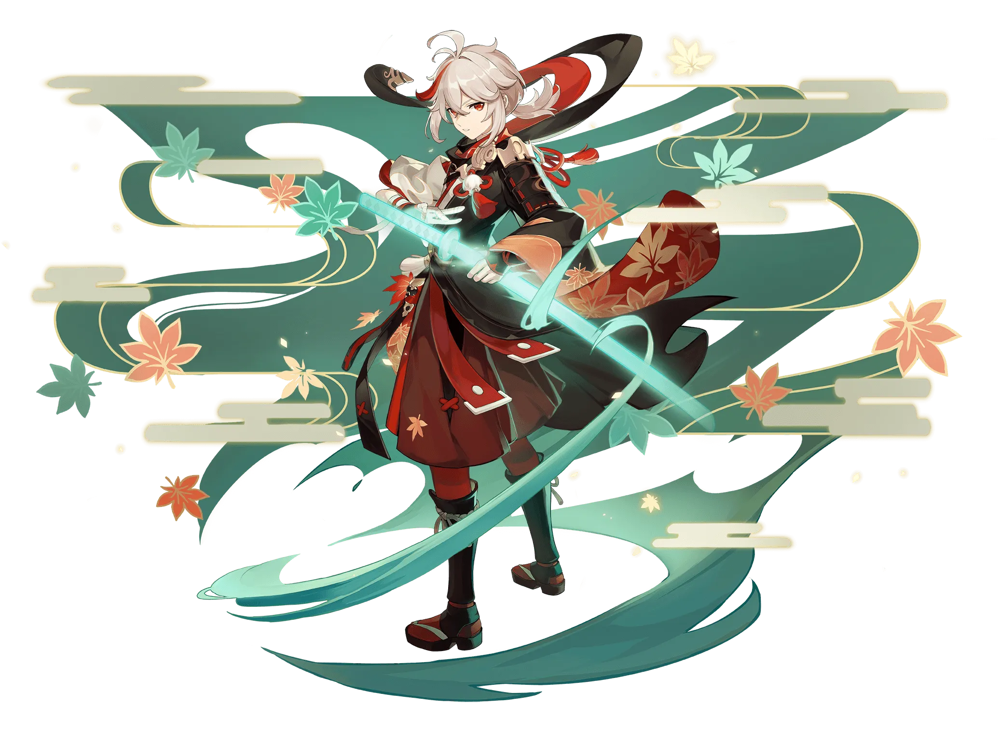
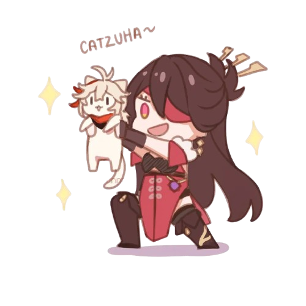
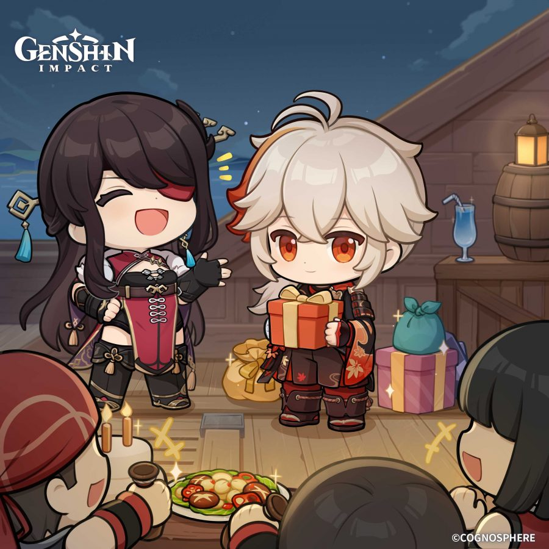
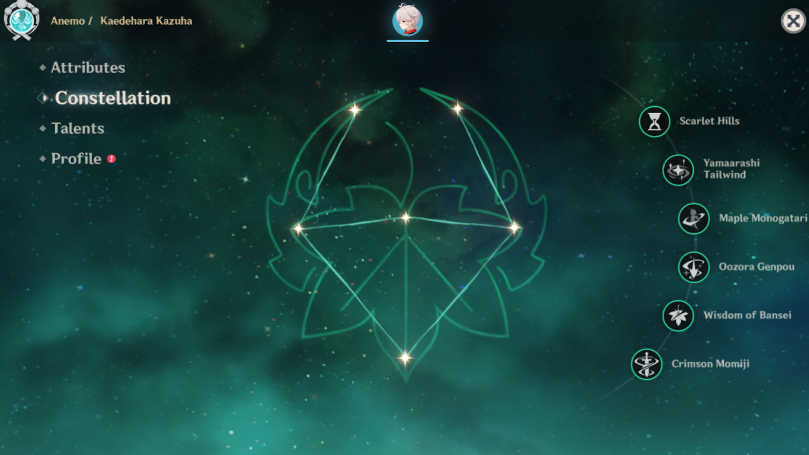
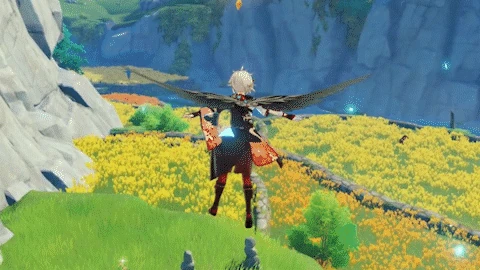
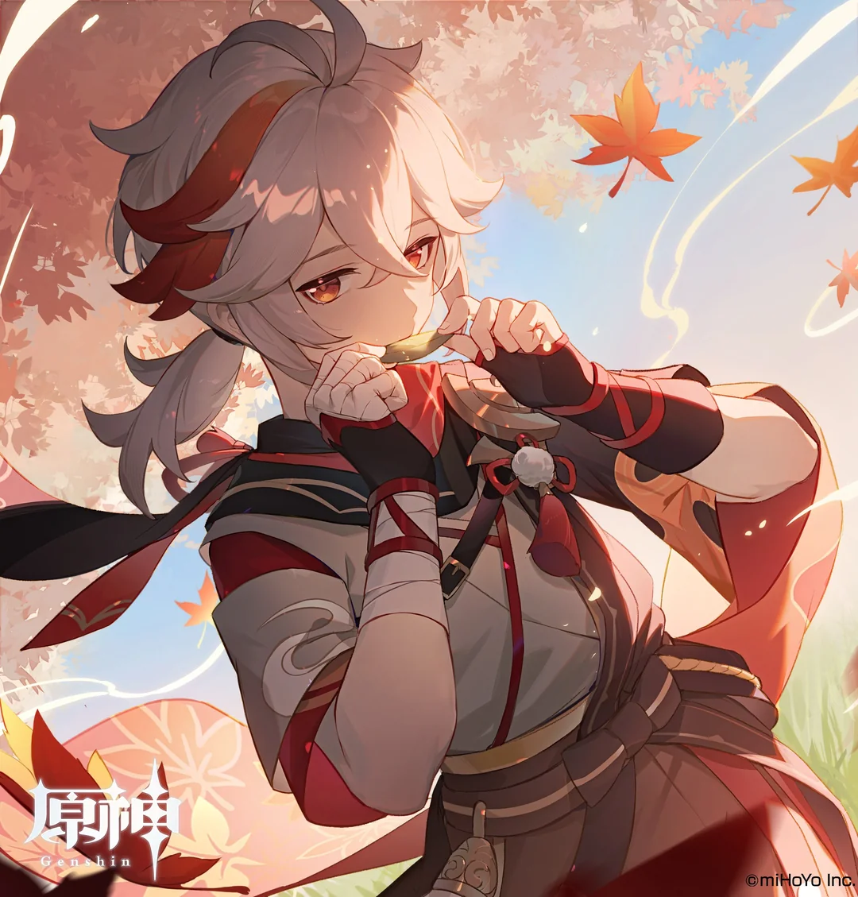

This scenery is wonderful... Surely enough to convince anyone to become a wanderer.
Chat: Nature

Kaedehara Kazuha
A wandering samurai from Inazuma with a modest and gentle personality.
Beneath a youthful and carefree demeanor lies a heart that hides a great many burdens from the past. Seemingly easygoing, Kazuha has his own code of conduct.
EN VA:Mark Whitten
CN VA:Jing Chen
JP VA:Shimazaki Nobunaga
KR VA:Kim Shin-woo
Title
Scarlet Leaves Pursue Wild Waves
Constellation
Acer Palmatum
Affiliation
Kaedehara Clan
Birthday
October 29th
Vision
- Anemo -
Nation
- Inazuma -
Weapon
- Sword -
- Hello! -
Come driving rain or winds that churn, I shall return, by blade alone, armed, if barefoot, to my home..." I am Kaedehara Kazuha, a wanderer who roams the land. Since we are both travelers, let us journey together for a time.
- About Kaedehara Kazuha: Favorite Food -
The most easily obtainable food source when you're out at sea is, of course, fish. So it goes without saying that a seafaring adventurer must give careful consideration to how to cook a tasty fish-based meal... If the chance arises, I'd like you to try some of my cooking.
- About Kaedehara Kazuha: Samurai Nobility -
The Kaedehara Clan was once a famed samurai clan. It's a pity that by the time the noble name passed to me, the title itself was all that was left. But it is enough for me. A samurai has no need of a lavish life — we find all that we need in wine, song, and the blade in our hands.

Story
Most people who meet Kaedehara Kazuha for the first time might be inclined to assume that he is just a trainee sailor with the "Crux Fleet."
Even Beidou, ever the good judge of character, could not tell that Kazuha could wield a sword with the skill of a seasoned warrior when she first decided to take him in.
Who knows if it was the storms of life that smoothed out his rough edges, or if his natural restraint has kept his edge sheathed.
After all, he is a gentle soul who enjoys reciting poetry when idle, and who speaks to everyone in a leisurely manner. Who could tell that he is a wanted man throughout Inazuma?
Character Story
The Crux, an armed fleet from Liyue, spends much of the year on the high seas, and its sailors are quite used to the vagaries of life in other nations. So they were more curious than surprised when an outlander began serving as a sailor on their flagship, the Alcor.
The sailor in question was picked up when the Alcor docked at the Inazuman port of Ritou.
Beidou had made friends with this young man, and when he came on board, she told her crew, "This guy's gonna be staying with us for a while. Take care of him, now."
The sailors trusted Beidou's judgment and admired the newcomer for his martial prowess, not to mention his ability to predict the weather, so they were happy to overlook his reticence to discuss his past, and welcomed him aboard.
Still, their curiosity did not abate, and they would often find all sorts of excuses to try and ply him for information about his experiences.
"I've heard that they make some sweet blades there in Inazuma and that the bigger the fish you are, the swankier the sword. So, uh... how's yours measure up?"
"..."
Kazuha would remain silent in the face of all such queries.
Over time, after countless attempts to garner a response proved futile, the sailors would simply give up asking.
Eventually, it was an off-the-cuff remark from Chief Mate, Juza, just a few days later that finally managed to elicit a reply.
"Hey, Inazuma boy. What are the lads supposed to call you if they don't even know your name?"
The young sailor wiped the sweat from his brow with his callused hands.
"My name is Kaedehara Kazuha, a wandering samurai. I am in your debt for taking me in, so just call me 'Kazuha.'"
Kazuha was not born a commoner. He hails from an Inazuman noble house of old, the last son of the Kaedehara Clan.
Inazuma City is home to many illustrious clans, and the Kaedehara name was once one of the most renowned among them. But fortune is fickle, and the Kaedeharas' fortunes had already collapsed by the time they were Kazuha's to inherit.
As the young master of the house, Kazuha could do nothing but watch as his family's future crumbled around him. But as helpless as this made him feel, when the moment came that the home was officially repossessed and the last attendant was finally dismissed, he breathed a sigh of relief: As far as he was concerned, this was a golden opportunity to begin leading a free and wandering life.
He had always longed to roam the mountains and forests, and had held a deep admiration for the beauty and authenticity of nature since his youth.
To Kazuha, nature had never been silent. It had always spoken to him, conveying its feelings in its own unique language.
When the wind ceases to speak and the world falls silent, that is the calm before the skies begin to weep. When silent springs suddenly leap into activity, it is the omen of a great earthquake.
These are the unique poetics that nature has bestowed upon him, and Kazuha was never one to be preoccupied with luxury anyway — so if the burden of family responsibility should drop from his shoulders, why not go wandering, and travel light?
Thus did Kazuha strike out on his journey, like a falling leaf in the yard carried away by the wind.
All travelers who outdoors roam need some skill to call their own. For Kazuha, this is his ability to read the sounds of nature.
After leaving Inazuma City, Kazuha wandered here and there. Things were different now: all of nature was his treasured home, and the sounds of wind and water beneath the sight of drifting clouds set his heart at ease.
All that he saw on the road filled him with curiosity. It was in this state of mind that Kazuha arrived at a mountain in the south.
It was early summer, and the frequent and heavy rainfall had turned the mountain roads to mud. Seeing that night was soon to fall, Kazuha decided to find somewhere to shelter from the rain. No sooner had he had this thought than he turned around to see a small straw hut at the far end of the road.
The traveling merchant with whom he was traveling at that time whooped for joy at the sight of the hut: "Kazuha, look! We'll have a roof over our heads tonight!"
But Kazuha did not speak. He paused and listened intently for a long while before he finally replied: "If you were to ask my opinion... it may be best to stay away."
But the merchant did not wish to remain in the rain. He left Kazuha and made his way to the house.
Upon knocking at the door, the traveling merchant was met by a lovely woman who offered him shelter, tea, food, and even bedding for the night.
Perhaps it was the excellent food, but the merchant quickly became drowsy and fell asleep immediately after finishing his meal.
When he awoke the following morning, there was no roof over his head. The bright sunlight pierced his eyes, and all he could see was Kazuha standing nearby, looking down at him and smiling.
Before the merchant could speak, he vomited a great pile of leaves and mud. And as for the bedding upon which he had slept so soundly, ah, it too was mud.
Kazuha smiled and said: "The wind is weaker where there are houses. Yet here stood a hut, and there was no change in the mountain breeze. I think you might have been the victim of a bake-danuki's prank. Never mind. Next time, listen more closely to the wind and tread with care."
Kazuha made many friends during his travels. One of them was particularly close to his heart, and for a time, the two journeyed together.
But they too would part, for their destinations were different.
To have met merely by chance and then form such a strong bond, there must be a fated connection between them... so, although they would part ways for now, surely they would meet again. Or so Kazuha thought.
But something happened soon thereafter that would shatter his calm disposition — the Almighty Shogun promulgated the Vision Hunt Decree and swore to retrieve all Visions.
All who wielded them, including Kazuha, were stricken with panic, concealing their identities and going into hiding.
It was then that Kazuha received shocking news: Someone had dared to call for a "duel before the throne," and that someone was none other than Kazuha's dear friend.
The defeated party in a duel before the throne would face punishment at the hand of the Shogun herself. His friend was prepared to risk all to come before the throne, partly for the chance to fight against a strong foe, but also to demonstrate the meaning of courage to all.
And yet, to call for this challenge now, of all times... Kazuha feared that his punishment, should he fail, would be absolute: The Almighty Shogun would unleash her lightning upon him in its full fury, and it would surely take his life.
Even the normally calm Kazuha could not restrain himself. He drew his sword and stormed into Tenshukaku like a whirlwind... But alas, he arrived too late.
His friend's sword lay shattered in pieces, his Vision now an empty husk. Now a wanted man himself, Kazuha fled with grief in his heart.
From that moment on, the days of peaceful wanderings were over, and Kazuha's life became an unending series of battles.
Kazuha did not fear battle, of course, but the constant fighting left him feeling lost and perplexed.
He did not regret having set out on his doomed rescue mission, nor did he begrudge his friend for leaving him, but he could not help but think...
"Is this endless conflict truly the only way to assert one's ideals?"
The Crux Fleet became Kazuha's new home, and he drifted on the ocean wherever it took him.
Trouble still found him from time to time, but no issue was insurmountable with the support of the Crux crew.
From his vantage point on the Alcor's crow's nest, gazing out at the azure sea and sky, he finally had the space to think over the tumultuous events of his past and what it all meant to him.
"Every samurai wishes to live their life with passion and to claim the greatest reputation possible using the sword in their hands."
"But there will always be those whose base desires lead them astray from the path of justice and virtue, and whose blades leave an endless trail of enmity in their wake."
"Surely the heavens did not give us fleshly forms and the gods did not watch over our lives all so that we might take up arms against one another."
"Then, this sword I wield is not meant to slay, but to save..."
"Yes, this shall be my path as a samurai, and I shall defend it all my days."
As he reached the conclusion of his thoughts, Kazuha was suddenly inspired to pen down a few verses to serve as a maxim for himself thereafter... but before he could get started, he was interrupted by an irate voice from down below:
"Hey, Kazuha, quit gawking at the sky — get down here and lend a hand!"
It seemed the maxim would have to wait for another day. Whatever the helmsman, Sea Drake, needed help with clearly couldn't wait.
1
I like falling asleep on a warm rock that's been soaking in the mid-afternoon sun, then waking up and continuing on my journey with no particular aim in mind. So long as I have my blade by my side, there is nowhere I cannot go.

You'd like to know more about me, you say? Well, as you see, I am but a wandering samurai that you could have run into just about anywhere.
I have a very keen sense of hearing. My ears pick up all sorts of sounds: the wind through the mountain passes, the parting clouds, the sound of foxes chewing on apples in the forest, the sound of crabs blowing bubbles... This is nature's favor, it allows me to sense danger long before it draws near.
I used to love the rain when I was small. The sound of it would lull me into a peaceful sleep. But since I've grown older, my feelings have become more... complicated. I still like to listen to the rain today, but whenever I see the storm clouds start to gather, my heart sinks and I can't help but wonder: "Hm... will some nice person let me stay the night today?" Listening to the rain in drenched clothes is hardly peaceful — hehe... nothing can be when you're constantly interrupting yourself by sneezing.
I never stay in a single place for very long. Stagnancy dulls both my connection with nature and the blade I wield. While I am still able to, I want to travel far and wide and meet all sorts of different people.
Don't worry — even if the day comes for us to go our separate ways, I am certain that we will meet again, in some corner of the world. The fate that brings people together is not a cord so easily cut.
1
- About Beidou -
I owe Beidou my life. She took me in when I fled from Inazuma and gave me the courage to return there at the most difficult time of my life. She is a comrade in whom I and all the other sailors can place our trust.
- About Gorou -
When I was a wanted man, the resistance gave me a lot of help. The time I spent with Gorou was brief, but he left a deep impression on me. He's the type of person who says whatever's on his mind. He shares the highs and lows of his subordinates, and is never afraid to draw his sword for the sake of a friend. That's the kind of person I can really get along with.
- About Kujou Sara -
She defeated my friend in a duel before the throne, which I accept as proof of her great strength. But she uses that strength to serve as an oppressor's lackey, leading the Kujou Clan's troops to relentlessly seek out and confiscate Visions. This... I cannot forgive.
- About Raiden Shogun -
I've asked myself this question many times since leaving Inazuma. Do I simply resent the Raiden Shogun because of what happened in that duel? Because of the lethal stroke she dealt my dear friend? I've thought about this a good long time, and I believe the answer is no. My friend died an honorable death in that duel, and the Shogun was not unjustified in her conduct. My dissatisfaction with her has its roots in the Vision Hunt Decree. No one has the right to rob another of their hopes and dreams — not even a god.
- About Kamisato Ayaka -
I'm sure everyone living in Inazuma has heard of the "Shirasagi Himegimi." The lady of the Kamisato Clan is as perfect as a person can be, though our paths have seldom crossed. I wonder what she thinks of the state of Inazuma today?
- About Yoimiya -
The last time she commissioned Captain Beidou to ship fireworks to Liyue, I unloaded the shipment myself. They were so heavy! I doubt that anyone besides her could make such huge fireworks.
- About Sangonomiya Kokomi -
During my time with the Resistance, there was no one among our ranks who wouldn't look up to Her Excellency. As someone with a great passion for military matters, victory at all costs isn't really part of her ethos. She'd always try to limit the casualties to the minimum while planning her next move. By some accounts, it also seems that she seeks to take charge of both internal and foreign affairs for Watatsumi Island. Wouldn't that be too much to expect of herself though?
- About Shikanoin Heizou -
Don't be deceived by his happy-go-lucky disposition. As soon as he gets working on a case, that restless energy he carries around turns into a razor-sharp focus. It's quite remarkable to witness.
- Kazuha: About Others -
- Trivia -
Kaedehara (楓原) means "maple grove" (lit. "maple field") and Kazuha (万葉) means "a myriad of leaves."
The character 万 literally means "ten thousand," but it is often used to more broadly mean "a number which is vast and difficult to fathom."

His constellation, Acer Palmatum, is the scientific name of the Japanese maple, which his character design revolves around.

Kazuha, along with Xiao and Xianyun, are the only characters who can perform an Elemental Skill midair.

- Birthday -
I heard it was your birthday, so I wrote a haiku for you. Unfortunately, I'm not the most talented in this area, and after trying for several evenings, I was still only able to come up with the first two lines... I guess I'll just share what I've got so far, then. "Sun and moon rejoice / Birds of dawn sing songs anew"... Wait, don't say a word, I think the final line is coming to me... Yes, how about.... "Far from home, with you." Anyway, Happy Birthday. Let's go and get you some cake, shall we?
In his Character Demo, Kazuha recites a haiku. In the Chinese version, the "Solitary Cloud" or "Guyun" (Chinese: 孤云) could refer to the Guyun Stone Forest, where Kazuha appears to be in during the start of the trailer. The Guyun Stone Forest is also where Beidou's fleet The Crux can be found.
Kazuha is one of only a few characters who have been seen wielding more than one element, though it was temporary for him. During the Archon Quest The Omnipresent God in Chapter II: Act III - Omnipresence Over Mortals, Kazuha wielded both Anemo from his own Vision and Electro from the Masterless Vision that belonged to his friend.